Building quantum algorithms and AI systems across optimization, simulation, scientific discovery, agents, and language-model workflows — from Shor's algorithm and quantum differential-equation solvers to hybrid quantum–classical software.
I am a Research Engineer at Singapore Management University working across quantum computing, quantum algorithms, and AI. My work spans hybrid quantum-classical optimization, Shor-style factoring experiments, quantum simulation and differential-equation solvers, LLM-guided research loops, AI agents, and scientific software systems.
I worked on MettleQ, a trustworthy local quantum-circuit simulation package for Apple Silicon. It integrates with Qiskit and PennyLane, exposes exact statevector and matrix-product-state simulation paths, and uses MLX/Metal execution with measured dispatch policies and reproducible benchmark evidence.
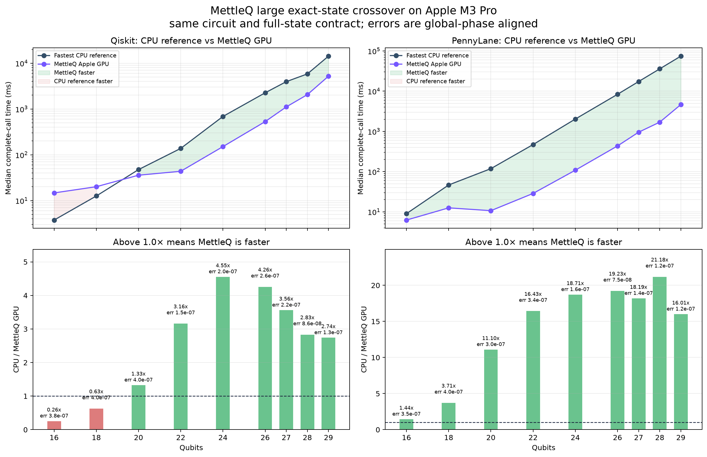
Ratio above 1.0x means MettleQ GPU was faster. In this latest run, MettleQ crosses PennyLane Lightning at 16 qubits and Qiskit Aer at 20 qubits.
| Qubits | Qiskit CPU/GPU | PennyLane CPU/GPU |
|---|---|---|
| 20 | 1.327x | 11.097x |
| 24 | 4.554x | 18.713x |
| 29 | 2.739x | 16.005x |
I also built The Atelier Lab, a local AI research laboratory for reproducing modern AI systems from first principles. It combines a foundation-model track with an autonomous local agent that runs on a single MacBook using Ollama, local embeddings, RAG, durable memory, and test-verified build mode.
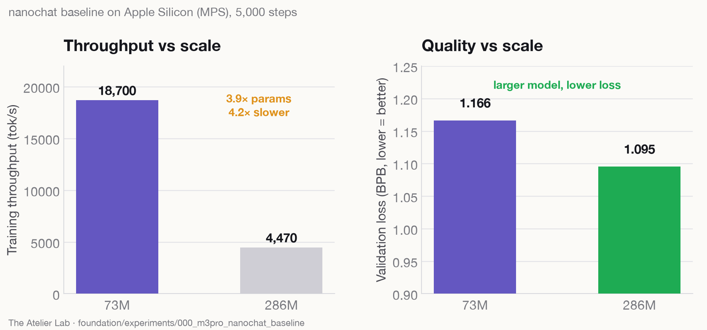
Baseline training measurements on an Apple M3 Pro, alongside a local agent stack for RAG, memory, code repair, and test-verified edits.
| Model | Throughput | Run cost | Loss |
|---|---|---|---|
| 73.5M | ~18.7k tok/s | ~1.2 h | 1.1664 BPB |
| 286.2M | ~4.47k tok/s | ~5.1 h | 1.0954 BPB |
I placed first on the BlueQubit Peaked Portal leaderboard with a perfect 2570/2570, solving all twelve P1–P12 peaked circuits. For the two 98-qubit instances I documented end to end, I recovered the accepted bitstrings from noisy Quantinuum Helios-1 samples using deterministic, target-blind decoding — preserving the raw provider output, repairing only result framing, and publishing a reproducible evidence package. The same circuits also fall to classical simulation: MettleQ recovered the 56-qubit P9 oracle exactly and did it roughly a third faster than the reference solver on identical hardware.
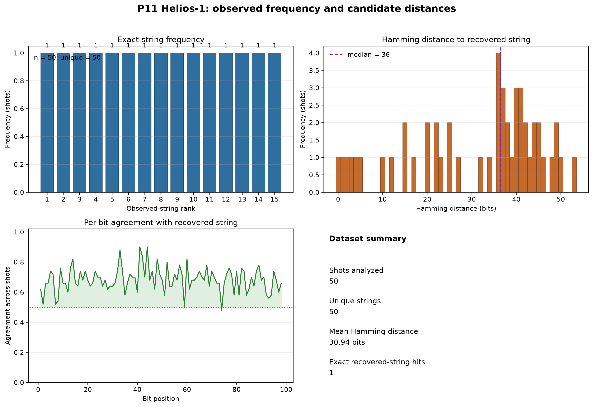
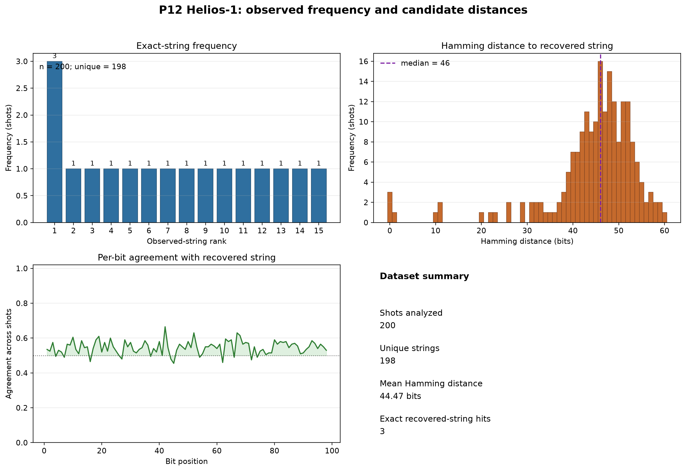
Both instances were decoded offline from the complete shot distribution. The most frequent string, the weighted observed medoid, and cluster consensus agreed on the accepted answer — with no shot filtering and no target leakage.
| Problem | Qubits | Shots | Provider cost | Recovery |
|---|---|---|---|---|
| P11 | 98 | 50 | 282.98 HQC | Accepted |
| P12 | 98 | 200 | 1,373.4 HQC | Accepted |
The same circuit family also falls to classical simulation. MettleQ contracts a midpoint matrix-product operator with greedy unswapping, materialises it as an MPS, and samples it — pure CPU, no GPU and no quantum hardware. It recovered the exact published 56-bit oracle (100% of oracle bits, appearing 102 times in 1000 samples), with the oracle used only for post-run validation, never to guide routing, compression, or sampling.
Against the upstream reference on the same machine and thread budget, wall time fell 32.6%. A prior tracker entry reports 734 s on an Apple M5 Pro; that comparison is cross-machine and is not presented as hardware-normalized.
| Solver | Machine | Threads | Wall time | vs reference |
|---|---|---|---|---|
| Upstream reference (CPU) | Apple M3 Pro | 2 | 990.9 s | — |
| MettleQ MPO + unswapping | Apple M3 Pro | 2 | 668.3 s | −32.6% |
The [2Fe–2S] iron–sulfur cluster models the electron-transfer active site of ferredoxin and tests methods for strongly correlated electrons. For CAS(30e,20o) — 40 spin orbitals and 240,374,016 determinants in the fixed-spin sector — my matrix-free full-space Davidson calculation reached an independently rechecked variational energy of −116.605609120429 Eh. Block2 DMRG at M=4000 is within 2.607 µEh of that state. These classical references anchor my quantum and hybrid sampling studies, alongside work on N₂ and [4Fe–4S].
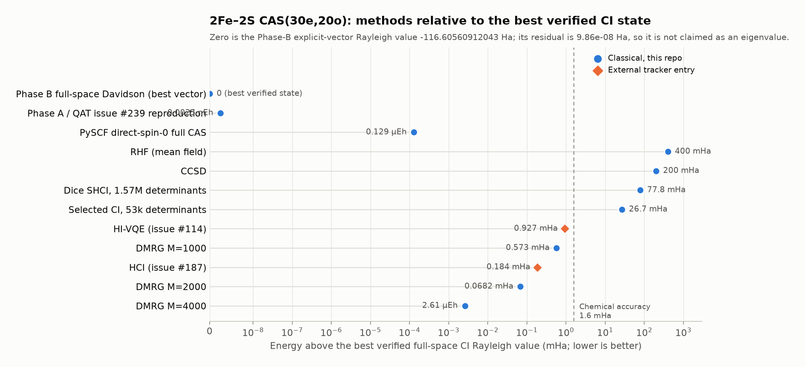
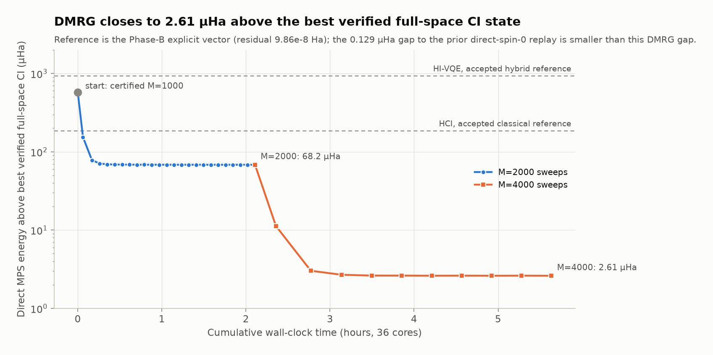
All values below are explicit variational-state energies in Eh. The Davidson result is a one-sided upper bound: its 10⁻⁸ Eh residual target was not reached, so it is not an exact ground-state energy or a two-sided FCI error bound. The M=4000 DMRG run recorded two stable cycles; a fresh-process replay of its final checkpoint is not recorded.
| Method | Energy (Eh) | Gap to Davidson (µEh) | Evidence |
|---|---|---|---|
| Full-space Davidson, Phase B | −116.605609120429 | 0 | Independent vector checks; residual 9.86×10⁻⁸ Eh |
| Block2 DMRG, M=4000 | −116.605606513308 | 2.607 | 10 sweeps; discarded weight 2.76×10⁻⁷ |
| Block2 DMRG, M=2000 | −116.605540903472 | 68.217 | 24 sweeps; fresh-process replays passed |
| External HCI reference | −116.605425000000 | 184.120 | Accepted QAT reference, issue #187 |
Phase B used 2.02 hours and 128.7 GiB peak RSS on 64 threads; DMRG M=4000 used 3.59 hours and 183.3 GiB on 36 threads. The tested quantum-sampling, core-embedding, and residual-informed proposals have not demonstrated an advantage over matched classical controls.
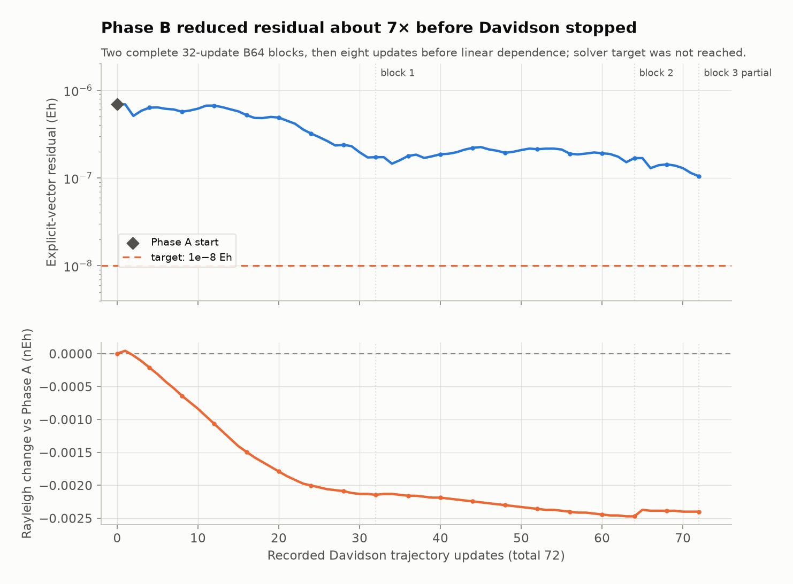
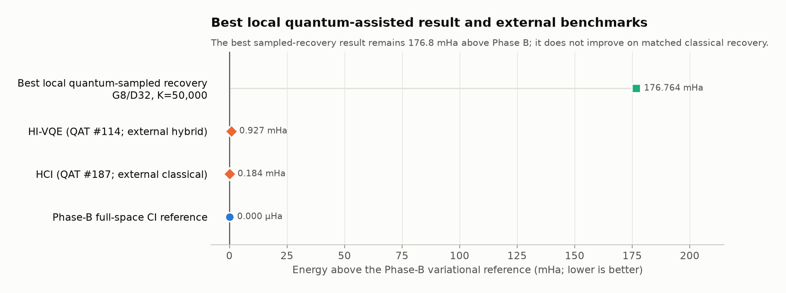
My entry implements a phase oracle for a 64 × 64 Classiq logo using 18 qubits: 12 coordinate qubits and six clean ancillas. Exploiting just 11 distinct row and column patterns, I compressed the image into class codes, applied a 63-term phase polynomial, then uncomputed the loaders. Optimizing the loader–kernel interface with ready-time scheduling, beam search, MILP, and local resynthesis reduced circuit depth from 5,329 to 111 and CX count from 3,502 to 557.
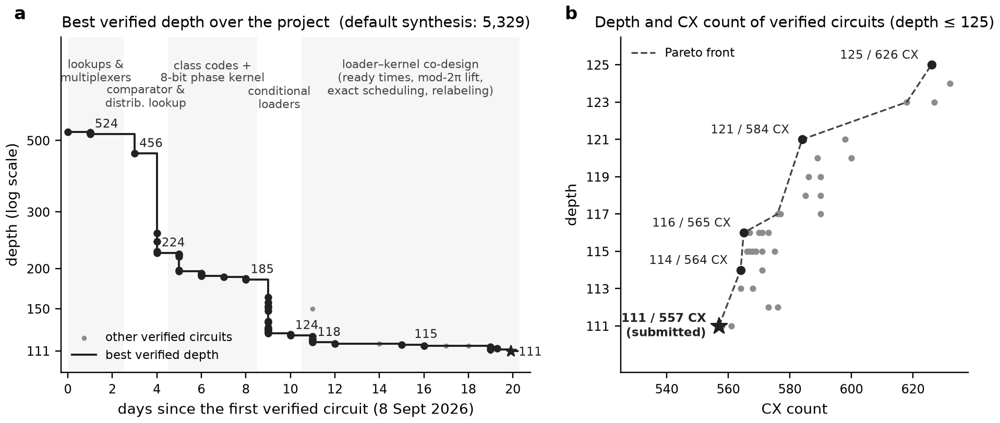
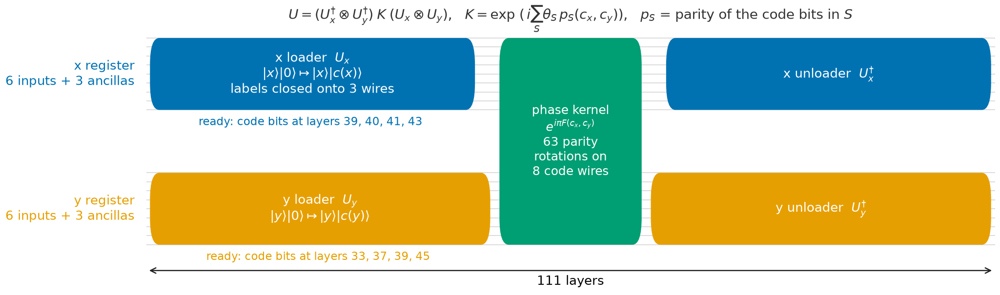
The final circuit uses 557 CX and 423 U3 gates. A NumPy state-propagation verifier checked every valid input |x, y, 0⁶⟩: the expected sign, a common global phase, unchanged coordinates, and all six ancillas restored to zero. The largest numerical error was 5.57×10⁻¹⁴. The result measures circuit synthesis and numerical verification.
| Circuit | Depth | CX gates | U3 gates |
|---|---|---|---|
| Challenge baseline | 5,329 | 3,502 | — |
| Final submission | 111 | 557 | 423 |
The hackathon page now requires access. The repository and technical report preserve the construction and verification evidence. Depth 111 is the best completed construction in this work, not a general lower bound.
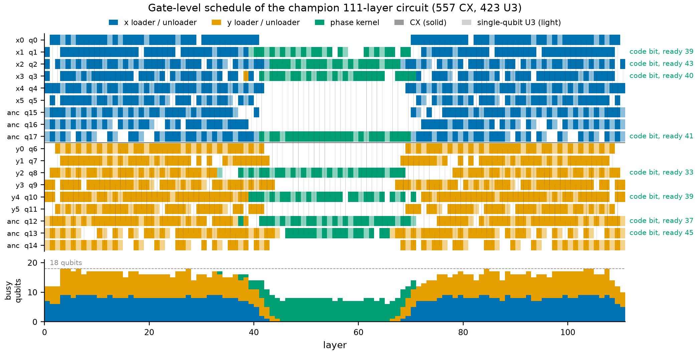
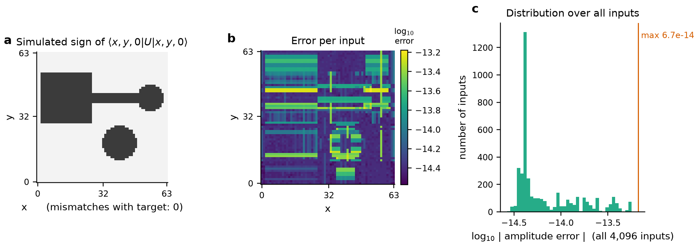
A complete, curated path of resources to learn quantum computing from scratch.
Open course ↗ 115 ★Projects and case studies running quantum machine learning on today's NISQ hardware.
Open course ↗ 85 ★A guided introduction to getting started with quantum machine learning.
Open course ↗ 63 ★Write and run quantum programs hands-on with IBM Qiskit.
Open course ↗ 55 ★Quantum computing in finance through hands-on, numerical labs.
Open course ↗ 50 ★Computational numerical linear algebra, from theory to working code.
Open course ↗Six of the most-used courses. The full set also covers Nielsen & Chuang Solutions, LeetCode Solutions, Computational Physics, High-Energy Physics, QSVT linear solvers, and GPU kernel practice with LeetGPU Solutions — all free at the Quantum Classroom ↗
What 247 experiments on IBM Heron revealed about standard and qubit-efficient quantum optimization workflows.
Read the article ↗ N° 02 · 2026A non-technical walkthrough of maritime energy resilience, chokepoint disruptions, and stochastic optimization for national supply networks.
Read on Medium ↗ N° 03 · 2026India's 1,000 km quantum communication demonstration, what QKD changes, and why quantum security is becoming infrastructure.
Read on Medium ↗A four-chapter arc on what quantum factoring can actually do — a 133/156-qubit run, honest metrics applied to every published Shor's result, what breaking RSA would really take, and the most ambitious resource estimate yet published.
Read the series ↗ 9 stories · 2025Landmark papers read alongside runnable code — quantum utility before fault tolerance, zero-noise extrapolation, quanvolutional networks, quantum volume, Grover mixers, and classically hard combinatorial benchmarks.
Read the series ↗ 6 lectures · 2023The algorithm core, implemented in Qiskit: Deutsch–Jozsa, Bernstein–Vazirani, Simon, the quantum Fourier transform, phase estimation, and Shor.
Read the series ↗ 18 lectures · 2023The full eighteen-part lecture course, from installing Qiskit to running Shor's algorithm — every lecture paired with working code.
Read the series ↗ 22 lectures · 2023Twenty-two lectures building a computational physicist's toolkit in Python — ODEs and PDEs, Fourier methods, random numbers, Bayesian inference, optimisation, and the Ising model.
Read the series ↗ 15 lectures · 2023Fifteen lectures on the linear algebra underneath data science — matrix decompositions, NMF and SVD topic modelling, compressed sensing for CT scans, and linear regression.
Read the series ↗ 5 labs · 2023Worked solutions to all five labs of the IBM Quantum Challenge Spring 2023, from basic circuits through to the final challenge.
Read the series ↗Open to research collaborations, talks, and hard problems across quantum computing, algorithms, agents, and scientific AI.